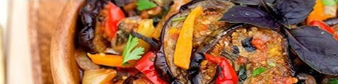
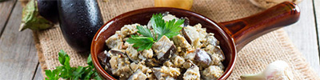
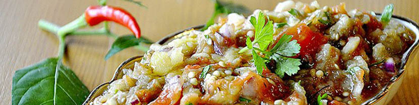
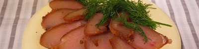

Синенькие по-грузински
- 5 кг синеньких
- 3 шт. горького перца
- 10 головок чеснока
- 500 грамм моркови
- 350 грамм уксуса

Синенькие порезать, пересыпать солью и оставить на 4-5 часов. Горький перец и чеснок перекрутить на мясорубке, морковь натереть. Синенькие залить уксусом и квасить 30 минут. Затем, промыть и жарить до готовности. За две минуты до конца жарки, в сковороду положить специи. Переложить готовые синенькие в банки, закатать и укутать.
Синие под грибы
- 6 кг синеньких
- 5 литров воды
- 1 бутылка уксуса
- 1 стакан соли (250 грамм)

Кипятим синенькие в рассоле 10 минут, добавляя в него соль. Затем, отжимаем воду (чтобы хорошо стекла). Бутылку масла кипятим и вливаем в него уксус + 3 головки чеснока. Синенькие отжимаем, кладем в миску, заливаем маслом +… Раскладываем по банкам и стерилизуем 30 минут (1 литр).
Греческие синенькие
- 3 баклажана
- 3 помидора
- 3 перца
- 3 луковицы
- 100 грамм подсолн. масла
- 70 грамм уксуса
- Соль, перец

Все пожарить до готовности, сложить в горячие банки. Стерилизовать 15 минут, закупорить и охладить.
Синенькие по-грузински (1)
- 5 кг синеньких
- 3 шт. горького перца
- 10 головок чеснока
- 500 грамм моркови
- 350 грамм уксуса
Синенькие порезать, пересыпать солью и оставить на 4-5 часов. Горький перец и чеснок перекрутить на мясорубке, морковь натереть. Синенькие залить уксусом и квасить 30 минут. Затем, промыть и жарить до готовности. За две минуты до конца жарки, в сковороду положить специи. Переложить готовые синенькие в банки, закатать и укутать.
Синие под грибы (1)
- 6 кг синеньких
- 5 литров воды
- 1 бутылка уксуса
- 1 стакан соли (250 грамм)
Кипятим синенькие в рассоле 10 минут, добавляя в него соль. Затем, отжимаем воду (чтобы хорошо стекла). Бутылку масла кипятим и вливаем в него уксус + 3 головки чеснока. Синенькие отжимаем, кладем в миску, заливаем маслом +… Раскладываем по банкам и стерилизуем 30 минут (1 литр).
Греческие синенькие (1)
- 3 баклажана
- 3 помидора
- 3 перца
- 3 луковицы
- 100 грамм подсолн. масла
- 70 грамм уксуса
- Соль, перец
Все пожарить до готовности, сложить в горячие банки. Стерилизовать 15 минут, закупорить и охладить.
Куриный балык
- 1,5 кг. куриного филе
- 75 грамм соли
- 10 грамм молотого перца
- 10 мл коньяка

Филе промыть, очистить от жира и плевы, просушить. Сложть в посуду, пересыпав специями. Убрать в холодильник на сутки под пресс. Затем промыть, обсушить и...